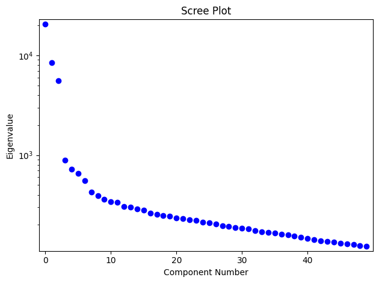
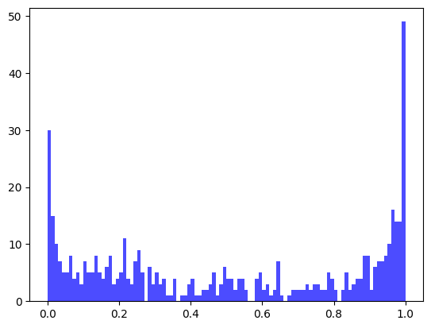

import numpy as np
import matplotlib.pyplot as plt
import statsmodels.api as smRidgeLFMM
Ridge solutions to a Latent factor mixed model
Ridge solutions to a Latent factor mixed model as developed by Caye et al. (2019).
TODO: Add documentation
RidgeLFMM
RidgeLFMM (K:int, lambd:float)
Ridge solutions to a Latent Factor Mixed Model (LFMM).
| Type | Details | |
|---|---|---|
| K | int | Number of latent factors |
| lambd | float | Regularization parameter |
In order to use the model we have first to initialize it with the number of latent factors \(K\) and a certain regularization parameter \(\lambda\).
model = RidgeLFMM(K=2, lambd=1e-5)Then, we have to fit the model. That is, …
TODO: add documentation
\[ \mathbf Y = \mathbf X \mathbf B^T + \mathbf W = \mathbf X \mathbf B^T + \mathbf U \mathbf V^T \]
RidgeLFMM.fit
RidgeLFMM.fit (Y:numpy.ndarray, X:numpy.ndarray)
Fits the LFMM model. It a
| Type | Details | |
|---|---|---|
| Y | ndarray | Allele frequency matrix (nxL) |
| X | ndarray | Environmental matrix (nxP) |
The fit() method expects as input a centered genotype matrix \(\mathbf Y\) and an environmental matrix \(\mathbf X\) with as many rows as individuals. For now, let us simulate them under the generative model:
def generative_model(rng, N, L, P, n_targets):
X = rng.normal(size=N)
B = np.zeros(L)
target_indices = rng.choice(L, n_targets, replace=False)
B[target_indices] = rng.uniform(-10, 10, size=n_targets)
U = np.dot(X.reshape(-1, 1), np.array([[-1, 0.5, 1.5]])) + rng.normal(size=(N, 3))
V = rng.normal(size=(3, L)) # V should have 3 rows to match the columns of U
Y = np.dot(X.reshape(-1, 1), B.reshape(1, -1)) + np.dot(U, V) + rng.normal(scale=0.5, size=(N, L))
Y = (Y > 0).astype(int)
X = np.hstack((X.reshape(-1, 1), rng.normal(size=(N, P-1))))
assert X.shape == (N, P)
assert Y.shape == (N, L)
return Y, X
rng = np.random.default_rng(1000)
Y, X = generative_model(rng, N=100, L=500, P=10, n_targets=10)Now, we can fit the model:
model.fit(Y, X)And access the solutions:
model.Barray([[-2.78453644e-01, 1.41587888e-02, 5.13771197e-02, ...,
-1.47714061e-04, -1.86649187e-02, -2.08875205e-02],
[ 2.47105596e-01, 1.43403149e-02, 2.37813317e-02, ...,
-8.21652629e-03, 5.95483950e-02, -2.60485423e-02],
[ 2.73900824e-01, -3.82792353e-02, 1.26495387e-02, ...,
8.67465255e-03, 5.68631519e-02, -2.62694637e-03],
...,
[ 2.69958466e-01, -3.16110172e-03, -1.20700937e-02, ...,
4.24986407e-02, 2.03423953e-02, -3.70796316e-04],
[-4.61092762e-02, -2.54860964e-02, 6.31752046e-02, ...,
9.79842282e-03, -5.75187402e-02, 2.55970055e-02],
[-3.92398665e-01, 2.47180625e-02, -2.53285265e-02, ...,
-2.03821326e-02, -3.63827134e-02, -3.65644912e-02]])We can also predict the optimal genotypes and measure the mean squared error:
RidgeLFMM.predict
RidgeLFMM.predict (X:numpy.ndarray)
Predicts the centered genotypes for a given environmental matrix.
| Type | Details | |
|---|---|---|
| X | ndarray | Environmental matrix (nxP) |
center_Y = Y - np.mean(Y, axis=0)
mse = np.square(model.predict(X) - center_Y).mean()
msenp.float64(0.09196852738485788)As you may notice, the choice of \(K\) has to be done. This is typically done using with screeplot. We are not re-inventing the wheel, as they are many libraries available. For example, using statsmodels:
pca = sm.PCA(Y, ncomp=50)
_ = pca.plot_scree()

According to the screeplot, one would likely choose \(K=3\). Another option (more conservative), would be to use a Tracy-Widom test. Add documentation.
Tracy-Widom test
The Tracy-Widom statistics can be computed from eigenvalues of the genotype matrix. Assuming we have already run PCA:
tw = TracyWidom_statistic(pca.eigenvals)
twarray([ 2.77705718, 3.75974611, 8.61227923, 10.04178075, 8.99228271,
11.35023082, 10.52348525, 4.02039346, 3.23765541, 1.2409211 ,
1.04161821, 2.13879148, -0.51434203, 0.34619778, 0.31436582,
0.05180913, -1.7429673 , -1.72091196, -1.57085881, -0.90878066,
-2.19740509, -1.37618545, -1.33952488, -1.16909122, -1.43430713,
-0.89103181, -1.52716887, -1.99080084, -1.93656521, -1.80524369,
-1.5159909 , -0.78553427, -2.19314044, -2.5419654 , -1.6276135 ,
-0.98867776, -1.11233303, -0.35534093, -0.52820144, -0.39299708,
-0.65812177, -0.81964231, -1.21624522, -1.49336892, -0.98588646,
-1.00924749, -1.26902281, -0.78655709, -0.92656526, nan])A p-value can be then calculated to each eigenvalue from the TracyWidom distribution (with \(\beta=1\)). The number of significant latent factors (for a given significance threshold) can be then found by first finding the first non-significant eigenvalue, \(d\). Then, we will assign \(K=d-1\). We provide a convenient function to do so:
latent_factors_with_TracyWidom
latent_factors_with_TracyWidom (twstat:numpy.ndarray, thresholds:numpy.ndarray)
| Type | Details | |
|---|---|---|
| twstat | ndarray | Tracy-Widom statistics |
| thresholds | ndarray | Array of significance levels |
| Returns | int | Number of significant eigenvalues |
latent_factors_with_TracyWidom(tw, [0.0, 0.001, 0.005, 0.01, 0.05, 1.0])array([ 0., 0., 8., 8., 11., 50.])GEA candidates
We can use F-test based on the LFMM model to find GEA candidates:
RidgeLFMM.FTest
RidgeLFMM.FTest (Y:numpy.ndarray, X:numpy.ndarray, genomic_control:bool=True)
Re-fit the coefficient of the LFMM model and make an F-test.
| Type | Default | Details | |
|---|---|---|---|
| Y | ndarray | Allele frequency matrix (nxL) | |
| X | ndarray | Environmental matrix (nxP) | |
| genomic_control | bool | True | whether to use genomic control |
| Returns | ndarray | Array of p-values (L) |
fig, ax = plt.subplots()
Fscores, pvalues = model.FTest(Y, X)
ax.hist(pvalues, 100, color='blue', alpha=0.7)
plt.show()

References
Caye, Kevin, Basile Jumentier, Johanna Lepeule, and Olivier François. 2019. “LFMM 2: Fast and Accurate Inference of Gene-Environment Associations in Genome-Wide Studies.” Edited by Joanna Kelley. Molecular Biology and Evolution 36 (4): 852–60. https://doi.org/10.1093/molbev/msz008.